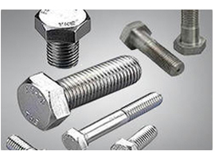
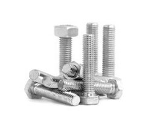
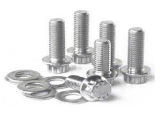
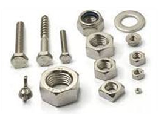
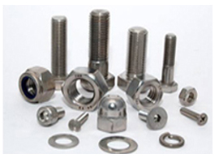
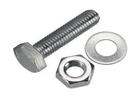
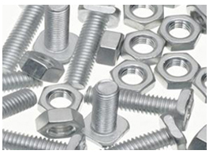

We are one of the highly acclaimed names in the market for designing and manufacturing a comprehensive variety of Stainless Steel Nuts & Bolts. Manufactured in accordance with set industrial norms, these fasteners are stringently checked and perfect on all quality parameters. Our extensive ranges of drained plugs are designed carefully by our experienced engineers who have a sound knowledge about these components.
RANGE : M10 TO M100, LENGTH UPTO 5 METERS
Standards : ASTM / ASME A/SA 193 / 194
Grade : B 8 (304), B 8C (SS 347), B 8M (SS 316), B 8 T (SS 321), A 2, A 4

Supplying and exporting a wide range of abrasion resistant and corrosion resistant Nuts & Bolts. These precision engineered Nuts & Bolts are extremely durable, reliable and are widely used in different industries.
RANGE : M10 TO M100 , LENGTH UPTO 5 METERS Standards : ASTM / ASME A/SA 193 / 194 GR. Grade : B 6, B 7/ B 7M, B 16, 2, 2HM, 2H, GR 6, B 7, B 7M.
One of the leading manufacturers and suppliers of Alloy steel fasteners Nuts & Bolts, we present our supreme quality range. Made in compliance with international standards of quality and safety, these fasteners Nuts & Bolts are available in varied grades and specifications to suit the demand and requirements of end buyers.
RANGE : M10 TO M100, LENGTH UPTO 5 METERS
Standards : ASTM / ASME A/SA 193 / 194
Grade : B 8 (304), B 8C (SS 347), B 8M (SS 316), B 8 T (SS 321), A 2, A 4

Grades : Hastelloy C-22, Hastelloy C-276, Hastelloy C-2000
Types: Bolts Stud Bolts, Hex Head Bolts, Socket Hexagon Head Screw Anchor Bolts, U-Bolts, J Bolts, Mushroom Head Square Neck Bolts , T- Head Bolts , Wing Scre

Grades : Inconel 600, Inconel 601, Inconel 625, Inconel 625LCF, Inconel 686, Inconel 718, Inconel 800, Inconel 825, Inconel X-750
Standard: ASTM / ASME SB 163 / 167 / 517 / 704 / 705
Types : Bolts Stud Bolts, Hex Head Bolts, Socket Hexagon Head Screw Anchor Bolts, U-Bolts, J Bolts, Mushroom Head Square Neck Bolts , T- Head Bolts , Wing Screw , Eye Bolt , Eye Bolt, Foundation Bolts, Structural Bolts.
Features :
- Corrosion resistance
- Optimum strength
- Long service life
- Fine finish

Grades : Incoloy 800, incoloy 825, Incoloy 925, Incoloy a-286, Incoloy DS Types: Bolts Stud Bolts, Hex Head Bolts, Socket Hexagon Head Screw Anchor Bolts, U-Bolts, J Bolts, Mushroom Head Square Neck Bolts , T- Head Bolts , Wing Screw , Eye Bolt , Eye Bolt, Foundation Bolts, Structural Bolts.
Features :- Corrosion resistance
- Optimum strength
- Long service life
- Fine finish

Grades : Grade 1, Grade 2, Grade 3, Grade 4, Grade 5, Grade 7, Grade 9, Grade 23. Types: Bolts Stud Bolts, Hex Head Bolts, Socket Hexagon Head Screw Anchor Bolts, U-Bolts, J Bolts, Mushroom Head Square Neck Bolts , T- Head Bolts , Wing Screw , Eye Bolt , Eye Bolt, Foundation Bolts, Structural Bolts.
Application : Titanium fasteners can be used in racing industries such as racing motorcycles and cars, sailing boats and medical equipment, etc.
